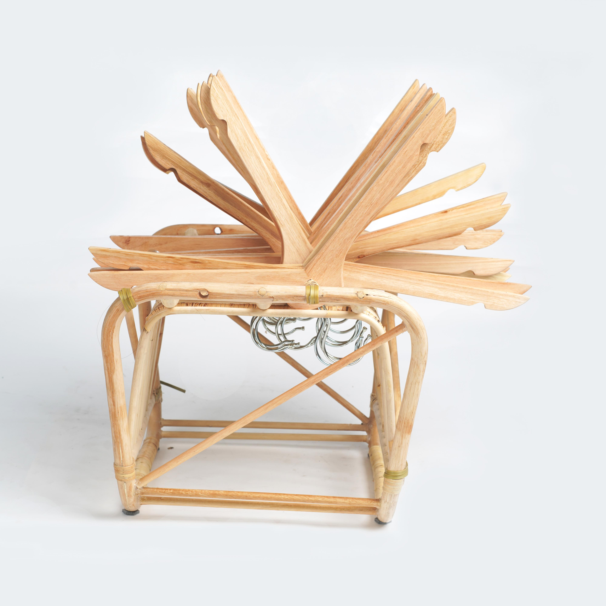
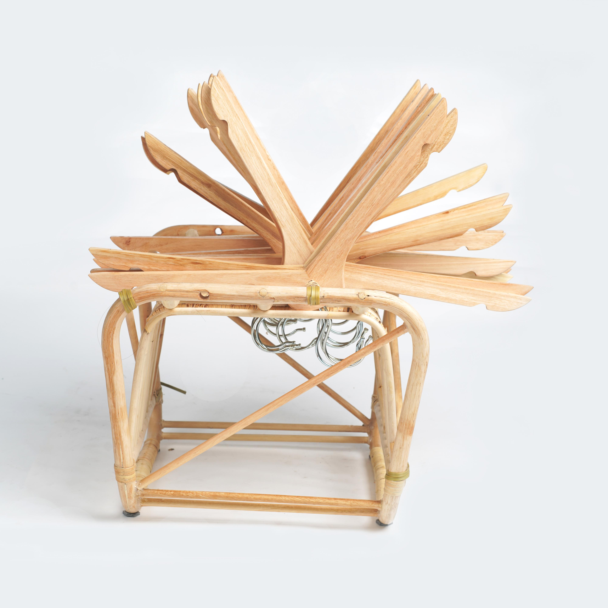
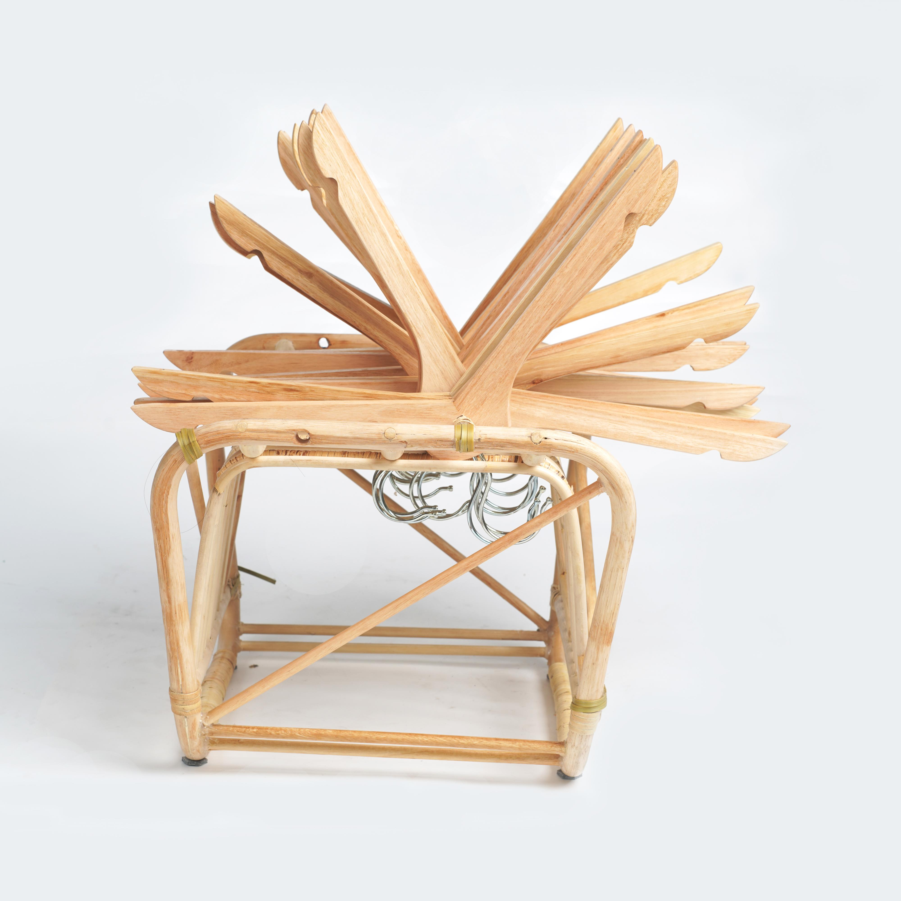

INDEFINITE STOOL
不定椅
Designer 陈宣宇
 

我认为黑客精神是一种不断探索、无定式的一个过程，挑战传统的椅面结构，通过排列、旋转的方式构成一个变化的椅面，让人们在不断变化的过程中寻找到属于自己的理解。我设计的椅子采用了宜家杂志架和衣架两个日常生活中常见的物品，利用衣架独特的三角结构排列构成椅面，让使用者在使用的时候寻找自己的角度，挑战传统的坐姿、坐态。希望能够引起人们对于传统椅子承载方式的思考。
Designer 陈宣宇

我认为黑客精神是一种不断探索、无定式的一个过程，挑战传统的椅面结构，通过排列、旋转的方式构成一个变化的椅面，让人们在不断变化的过程中寻找到属于自己的理解。我设计的椅子采用了宜家杂志架和衣架两个日常生活中常见的物品，利用衣架独特的三角结构排列构成椅面，让使用者在使用的时候寻找自己的角度，挑战传统的坐姿、坐态。希望能够引起人们对于传统椅子承载方式的思考。